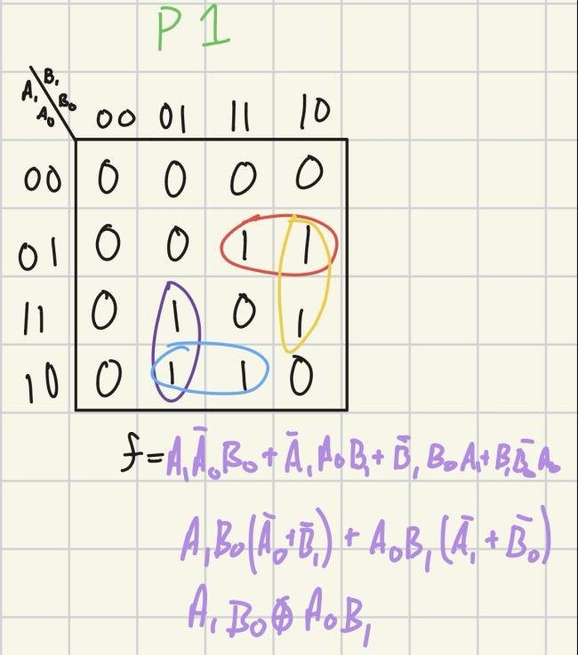
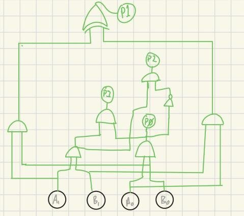
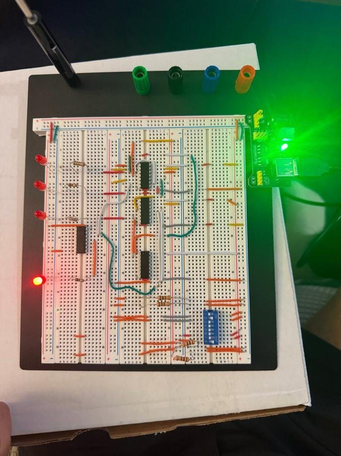

Two-bit multiplier
Digital Circuits and Systems, Lab 4, Fall 2026
A combinational circuit that multiplies two 2-bit numbers and shows the 4-bit product on LEDs, built from 74HC-series logic chips on a breadboard.
- Inputs
- A1 A0 and B1 B0, from a DIP switch
- Outputs
- P3 P2 P1 P0, on four LEDs
- Chips
- 4 (7404, 7486, and two 7408)
- Gates
- 8 (6 AND, 1 NOT, 1 XOR)
Problem
Multiply two unsigned 2-bit numbers. The largest product is 3 × 3 = 9, which is 1001 in binary, so the circuit has four inputs and four outputs. Each output is its own Boolean function of A1, A0, B1, and B0.
Design
I wrote the truth table for all 16 input combinations and reduced each output with a K-map.
P0 = A0·B0 P1 = A1·B0 ⊕ A0·B1 P2 = A1·B1·(A0·B0)' P3 = A1·A0·B1·B0
The outputs share terms. A1·B1 feeds both P2 and P3, and P0 is reused as an input to P2 (inverted) and P3. Every gate has two inputs, which matches the fan-in of 7400-series gates, and sharing keeps the whole design to 8 gates.


Build and testing
I built the circuit in stages and checked each stage against the truth table before adding the next: P0 alone, then P0 and P3, then P0, P2, and P3, then all four outputs. The LED states for the full circuit match the truth table on all 16 input combinations.
